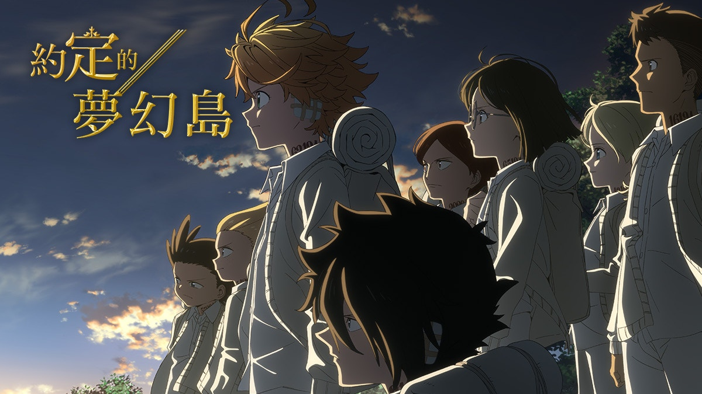

《約定的夢幻島》故事敘述，孤兒院「Grace Field House」是一所夢幻般的孤兒院。雖然沒有人去過孤兒院的柵欄和大門外，但不只是吃飽穿暖、還有溫柔的教育員「媽媽」照顧，且只要到達六歲就有可能被領養出去。而孤兒中最年長的三位十一歲孩童：艾瑪、諾曼以及雷，就這樣與其他孩子們一同生活了數年。 但誰知道在某日一位女孩被領養走，為了讓她帶上心愛的玩偶而追到門口的艾瑪等人，卻因此發現了恐怖的真相……一場張力十足的脫出劇就此在院內展開。